Como conectar o MySQL com o BD

No menu Arquivo , selecione Conectar ao MySQL
(essa opção será habilitada após a criação do projeto). Se você
estiver conectado anteriormente ao MySQL, o nome do comando será
Reconectar ao MySQL. Na caixa Provedor , selecione Driver ODBC 5.1
do MySQL (confiável). É o provedor padrão no modo padrão. Na caixa
Modo , selecione Modo Padrão. Esse é o modo padrão.
Use o modo padrão para especificar o nome e a porta do servidor.
No modo Padrão, forneça os seguintes valores:
Na caixa Nome do servidor , insira o nome do servidor MySQL. Na caixa
Porta do servidor , insira o número da porta como 3306. É a porta
padrão. Na caixa Nome de usuário, insira uma conta mySQL que tenha as
permissões necessárias.
Na caixa Senha , insira a senha para o nome de
usuário especificado. SSL: Se você quiser se conectar com segurança
ao MySQL, use o protocolo SSL marcando a caixa de seleção SSL.
Configurar: Ele fornece uma opção para configurar a conexão com o
MySQL por meio do Protocolo SSL.